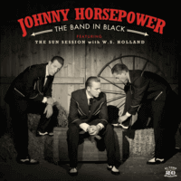

Johnny Horsepower - The Band In Black featuring The Sun Session with W. S. Holland (2017)
01 - Hey Porter (2:24)
02 - Let The Train Blow The Whistle (2:17)
03 - The Story Of The Man In Black (2:05)
04 - Ring Of Fire (2:51)
05 - I Didn't Shiver (2:37)
06 - Wanted Man (2:32)
07 - Man In Black (2:44)
08 - Folsom Prison (2:49)
09 - She's Gone (2:15)
10 - Mama Tried (2:36)
11 - San Quentin (2:12)
12 - Ghost Riders (5:12)
© El Toro Records :: [ETCD 6093]
Notes
Denmark.
Dennis Lydom - Vocals, Guitar
Tim Kristensen - Double bass
Morten Metniece - Electric Guitar
W.S. Holland - Drums on tracks 08, 09, 10, 11
Recorded at Sun Studios
Engineer - Curry Weber
reference information: Discogs®
Review
100/366 (Project 366)
Kind of a tribute music project that is dedicated to Johnny Cash. So, this is 100th review and first one was about Eddie Cochran fame, tenth one was about Johnny Burnette. Thus, I decided that Johnny Cash influenced music project from Denmark is a quite right choice for such a date! Rockabilly, Country, rockin' sound and folk tunes are so chicly.